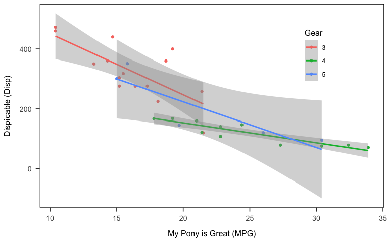

rmarkdown
Sue Song
2018-11-04
R environment
Structure
1. Header
Metadata in the Header (YAML)

translate the argument into YAML using yaml::as.yaml.
cat(yaml::as.yaml(list(
title = "example document",
author = "su so"
)))## title: example document
## author: su so2. Code chunks
Step 1. Insert code chunks
Keyboard shortcuts:
- Ctrl + Alt + I (Windows)
- Cmd + Option + I (Mac)
Step 2. Define chunk options
Options for the output documents
A full list of options available here.
| chunk options | description |
|---|---|
eval |
execute a code chunk? |
echo |
include the code in the output document? |
results |
include the result of the code chunk in the output document? use results="asis" for reportinguse results="hide" to hide the results |
warning |
show warning messages in the output document? |
message |
show console messages in the output document? |
include |
show code & result in the output document? equivalent to echo=F, results='hide', warning=F, message=F |
cache |
save the output of a code chunk? |
fig.width |
figure width |
fig.height |
figure height |
Useful tips & tricks
- selective inclusion
echo=3:5 only shows lines from 3 to 5
x <- c("a", "b", "c") #3
y <- c(1:3) #4
cbind(x, y) #5echo=c(1, 3) only shows the first and third lines
library("tidyverse") #1
x <- c("a", "b", "c") #3- using
childoption
Specify which child document you want the following code chunk should be:child = "child-doc.Rmd"
This is an example plot from a child document.
library(ggplot2)
qplot(carat, price, colour = cut, data = diamonds)
Step 3. Code away
Plot
plot(cars)
APA-formatted Plot
ggplot(mtcars, aes(x = mpg, y = disp, colour = as.factor(mtcars$gear))) +
geom_point() +
geom_smooth(method = "lm") +
labs(x = "My Pony is Great (MPG)",
y = "Dispicable (Disp)") +
scale_color_discrete("Gear") +
papaja::theme_apa(box = T) +
theme(legend.position = c(0.8, 0.75))
ggsave("plot.png", width = 8, height = 5)
# unlink("plot.png")Or import a figure from your local storage
knitr::include_graphics(here("plot.png"))
Table
Create a table using knitr::kable
mtcars %>%
summarise(n = n(),
disp_mean = mean(disp, na.rm = T),
disp_sd = sd(disp, na.rm = T)) %>%
as.tibble() %>%
knitr::kable(caption="Summary Table", digits = 2)| n | disp_mean | disp_sd |
|---|---|---|
| 32 | 230.72 | 123.94 |
Tables for test statistics
knitr::kable(coef(summary(lm(disp ~ wt*as.factor(gear),
data = mtcars))),
format = "html", digits = 2)| Estimate | Std. Error | t value | Pr(>|t|) | |
|---|---|---|---|---|
| (Intercept) | -50.16 | 56.99 | -0.88 | 0.39 |
| wt | 96.71 | 14.34 | 6.75 | 0.00 |
| as.factor(gear)4 | 26.55 | 80.74 | 0.33 | 0.74 |
| as.factor(gear)5 | -66.28 | 93.83 | -0.71 | 0.49 |
| wt:as.factor(gear)4 | -40.68 | 25.67 | -1.58 | 0.13 |
| wt:as.factor(gear)5 | 24.43 | 30.82 | 0.79 | 0.44 |
Sourcing an external .R script
knitr::read_chunk(here::here("data_analysis", "data_cleaning.R"))3. Text paragraphs
inline formatting
Basic formatting
Cheetsheat LaTex math symbols
extracting test statistics
Example
\(y_{ij}\) = \(\beta_0 + \beta_1 MPG + \beta_2WT + \beta_3MPG*WT + e\)
Step 1. Run and save your analysis
knitr::kable(broom::tidy(summary(lm.fit <- lm(disp ~ mpg*wt,
data = mtcars))),
format = "markdown", digits = 3)| term | estimate | std.error | statistic | p.value |
|---|---|---|---|---|
| (Intercept) | 48.552 | 130.463 | 0.372 | 0.713 |
| mpg | -1.106 | 4.609 | -0.240 | 0.812 |
| wt | 114.085 | 29.827 | 3.825 | 0.001 |
| mpg:wt | -2.726 | 1.685 | -1.617 | 0.117 |
Step 2. Use summary(fit)$coefficients to extract information
| r code | output | |
|---|---|---|
| coefficients | summary(fit)$coefficients[ ,1] |
-1.1056379 |
| Standard errors | summary(fit)$coefficients[ ,2] |
4.6092387 |
| test statistics | summary(fit)$coefficients[ ,3] |
-0.2398743 |
| p-values | summary(fit)$coefficients[ ,4] |
0.8121751 |
| R squared | summary(fit)$r.squared |
0.8285675 |
coefficients & p-values:
…a negative slope of MPG, \(\beta\) = -1.11, \(p\) = 0.81.r-squared:
\(R^2\) = 0.8285675.
Citing references
Useful tools
- citr add-in
# install.packages("citr")
options(citr.use_betterbiblatex = T)- papja
- Step 1. export a bib file from your reference manager (e.g., Mendeley, Zotero)
- Step 2.
papaja::r_refsto create a bib file- .bib file will include citations for R and R packages used in the session.
papaja::r_refs(file = "zotero_ref.bib", append = T)- Step 3.
papja::cite_rto translate them into human-readable citations
citations <- papaja::cite_r(file=here("workflow", "zotero_ref.bib")
#, pkgs = c("papaja", "here")
#, withhold = F
#, footnote = T
)I used R [Version 3.5.1; @] and the R-packages }base [@}R-base], bindrcpp (Version 0.2.2; Müller 2018), broom (Version 0.5.0; ???), corrplot2017 (???), dplyr (Version 0.7.7; Wickham et al. 2018), forcats (Version 0.3.0; Wickham 2018a), ggplot2 (Version 3.1.0; Wickham 2016), here (Version 0.1; Müller 2017), knitr (Version 1.20; Xie 2015), papaja (Version 0.1.0.9842; ???), purrr (Version 0.2.5; Henry and Wickham 2018), readr (Version 1.1.1; Wickham, Hester, and Francois 2017), shiny (Version 1.2.0; ???), stringr (Version 1.3.1; Wickham 2018b), tibble (Version 1.4.2; Müller and Wickham 2018), tidyr (Version 0.8.2; Wickham and Henry 2018), and tidyverse (Version 1.2.1.9000; Wickham, n.d.) for the data analysis.
Citing step-by-step
Add the .bib file in the same folder as the .Rmd file
Add the following lines in the YAML header:
---
bibliography: reference.bib
csl: apa.csl
---- cite away using citation keys (optional: with citr addin)
in-line citation
… Joel, MacDonald, and Page-Gould (2017, 33) did thingsmultiple citations separated by a
;
… (see Baldwin 1992; also Joel, MacDonald, and Page-Gould 2017)removing author names by putting a minus sign,
-
… Joel (2017) did things
Reproducibility
print(sessionInfo(), locale = FALSE)## R version 3.5.1 (2018-07-02)
## Platform: x86_64-apple-darwin15.6.0 (64-bit)
## Running under: macOS 10.14.1
##
## Matrix products: default
## BLAS: /Library/Frameworks/R.framework/Versions/3.5/Resources/lib/libRblas.0.dylib
## LAPACK: /Library/Frameworks/R.framework/Versions/3.5/Resources/lib/libRlapack.dylib
##
## attached base packages:
## [1] stats graphics grDevices utils datasets methods base
##
## other attached packages:
## [1] bindrcpp_0.2.2 knitr_1.20 here_0.1
## [4] forcats_0.3.0 stringr_1.3.1 dplyr_0.7.7
## [7] purrr_0.2.5 readr_1.1.1 tidyr_0.8.2
## [10] tibble_1.4.2 ggplot2_3.1.0 tidyverse_1.2.1.9000
##
## loaded via a namespace (and not attached):
## [1] Rcpp_1.0.0 cellranger_1.1.0 pillar_1.3.0
## [4] compiler_3.5.1 plyr_1.8.4 bindr_0.1.1
## [7] tools_3.5.1 digest_0.6.18 viridisLite_0.3.0
## [10] lubridate_1.7.4 jsonlite_1.5 evaluate_0.12
## [13] nlme_3.1-137 gtable_0.2.0 lattice_0.20-35
## [16] pkgconfig_2.0.2 rlang_0.3.0.1 cli_1.0.1
## [19] rstudioapi_0.8 yaml_2.2.0 haven_1.1.2
## [22] withr_2.1.2 xml2_1.2.0 httr_1.3.1
## [25] hms_0.4.2 rprojroot_1.3-2 grid_3.5.1
## [28] tidyselect_0.2.5 glue_1.3.0 R6_2.3.0
## [31] readxl_1.1.0 rmarkdown_1.10 modelr_0.1.2
## [34] magrittr_1.5 codetools_0.2-15 backports_1.1.2
## [37] scales_1.0.0 htmltools_0.3.6 rvest_0.3.2
## [40] assertthat_0.2.0 colorspace_1.3-2 labeling_0.3
## [43] stringi_1.2.4 lazyeval_0.2.1 munsell_0.5.0
## [46] broom_0.5.0 crayon_1.3.4References
Baldwin, Mark W. 1992. “Relational Schemas and the Processing of Social Information.” Psychological Bulletin 112 (3): 461–84.
Henry, Lionel, and Hadley Wickham. 2018. Purrr: Functional Programming Tools. https://CRAN.R-project.org/package=purrr.
Joel, Samantha, Geoff MacDonald, and Elizabeth Page-Gould. 2017. “Wanting to Stay and Wanting to Go: Unpacking the Content and Structure of Relationship Stay/Leave Decision Processes.” Social Psychological and Personality Science. https://doi.org/10.1177/1948550617722834.
Müller, Kirill. 2017. Here: A Simpler Way to Find Your Files. https://CRAN.R-project.org/package=here.
———. 2018. Bindrcpp: An ’Rcpp’ Interface to Active Bindings. https://CRAN.R-project.org/package=bindrcpp.
Müller, Kirill, and Hadley Wickham. 2018. Tibble: Simple Data Frames. https://CRAN.R-project.org/package=tibble.
Wickham, Hadley. 2016. Ggplot2: Elegant Graphics for Data Analysis. Springer-Verlag New York. http://ggplot2.org.
———. 2018a. Forcats: Tools for Working with Categorical Variables (Factors). https://CRAN.R-project.org/package=forcats.
———. 2018b. Stringr: Simple, Consistent Wrappers for Common String Operations. https://CRAN.R-project.org/package=stringr.
———. n.d. Tidyverse: Easily Install and Load the ’Tidyverse’.
Wickham, Hadley, Romain François, Lionel Henry, and Kirill Müller. 2018. Dplyr: A Grammar of Data Manipulation. https://CRAN.R-project.org/package=dplyr.
Wickham, Hadley, and Lionel Henry. 2018. Tidyr: Easily Tidy Data with ’Spread()’ and ’Gather()’ Functions. https://CRAN.R-project.org/package=tidyr.
Wickham, Hadley, Jim Hester, and Romain Francois. 2017. Readr: Read Rectangular Text Data. https://CRAN.R-project.org/package=readr.
Xie, Yihui. 2015. Dynamic Documents with R and Knitr. 2nd ed. Boca Raton, Florida: Chapman; Hall/CRC. https://yihui.name/knitr/.